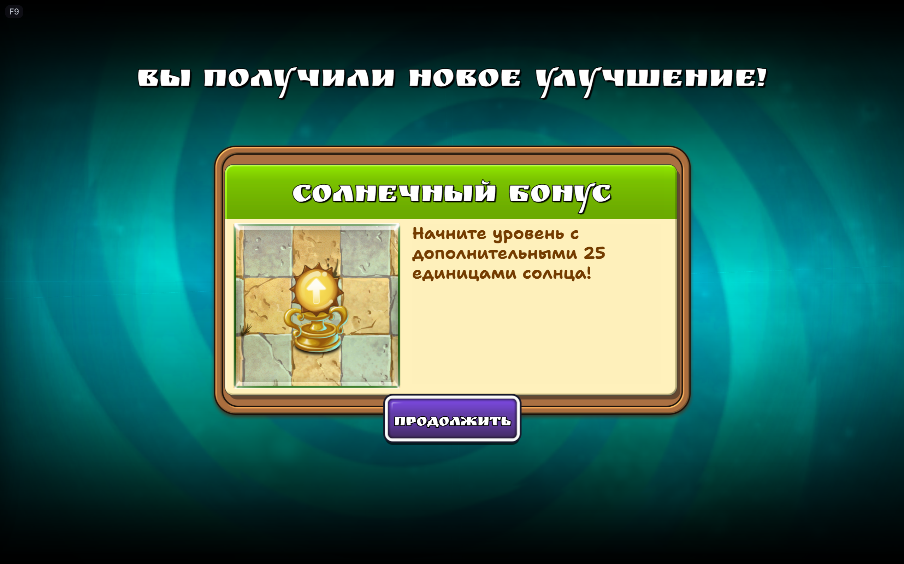

Screenshot gallery
See the mod in game
Russian fonts, menus, hints, dialogue and garden layouts — 20 real game screenshots.

Use ← / → to browse. Click any thumbnail to jump to it.
All screenshots20
Captured in version 1.0 with user-selected settings. Optional features shown here may be enabled manually. Game artwork belongs to its respective owners.